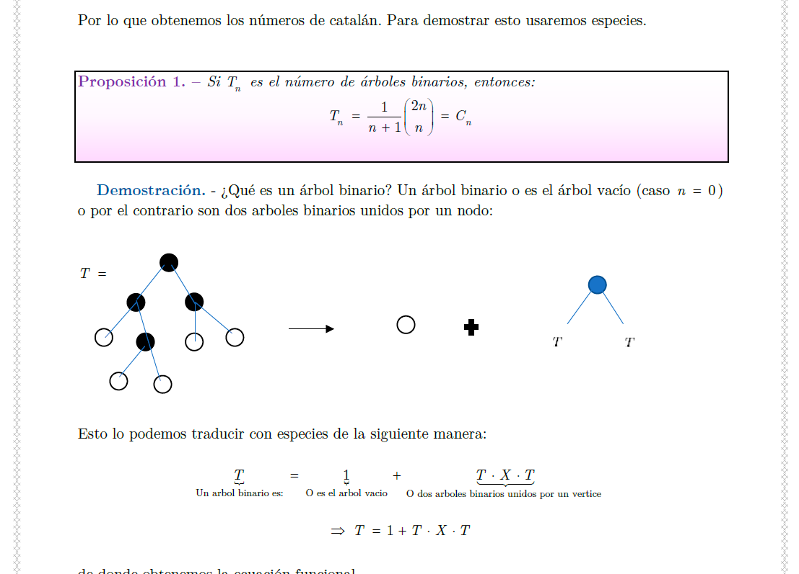

Course Notes
Personal transcriptions and notes from various courses (Algebra, Analysis, Number Theory, etc). These documents reflect my personal understanding of the subjects at the time and often contain detailed proofs that were sketched in class.
